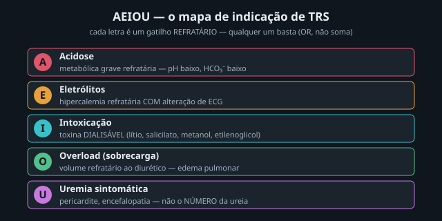
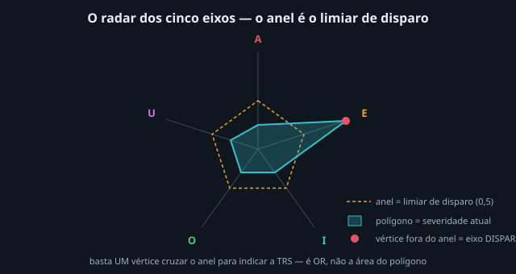
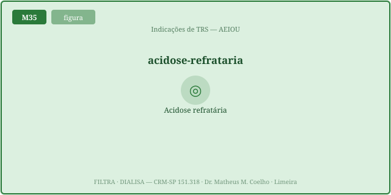
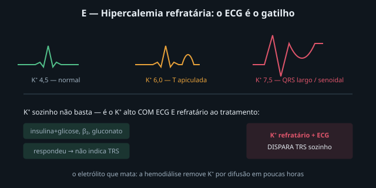
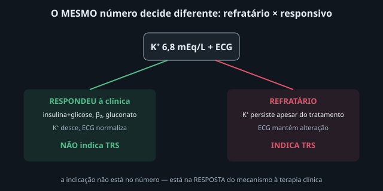
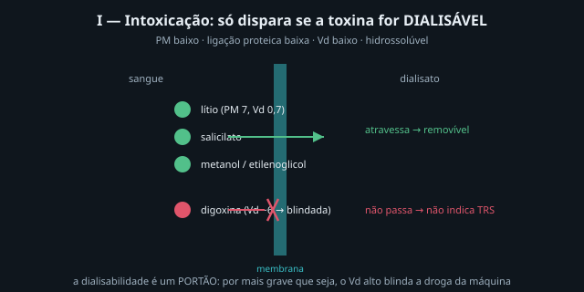
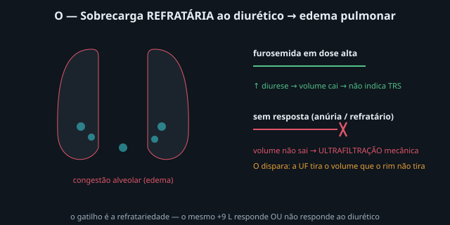
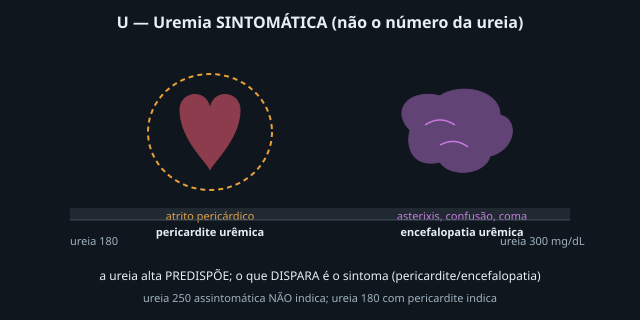

A indicação de TRS sai de um gatilho refratário, não de um número. O
mnemônico AEIOU enfileira os cinco eixos que, quando falham e não respondem mais à clínica, pedem a
máquina. A lógica é um OR: basta UM eixo cruzar o limiar. As Fig. 1–8 voltam no Caso, na Trilha e na
Avaliação. Atribuição em CREDITS.md (em curadoria).
Cada letra é um eixo do meio interno que o rim defende. Acidose, Eletrólitos, Intoxicação, Overload e Uremia. A indicação não exige todos — exige que um deles esteja refratário ao tratamento clínico. É um mapa de conduta, não um escore que soma pontos.


O rim regula o HCO₃⁻. Quando a acidose é grave (pH baixo, HCO₃⁻ baixo) e não responde ao bicarbonato/ventilação, a hemodiálise corrige (repõe HCO₃⁻ do banho/reposição). O que dispara é a refratariedade, não o valor isolado: a acidose que cede ao tampão não indica a máquina.

O K⁺ é o eletrólito que mata. Mas K⁺ alto sozinho não indica TRS — é o K⁺ alto com alteração de ECG (T apiculada → QRS largo → senoidal) e refratário à insulina+glicose, β₂ e gluconato. A hemodiálise remove K⁺ por difusão em poucas horas. Responder à clínica tira o eixo da indicação.


Algumas intoxicações pedem a máquina para remover o veneno, mesmo com rim quase normal. O gatilho é a dialisabilidade (PM baixo, ligação proteica baixa, Vd baixo, hidrossolúvel): lítio, salicilato, metanol, etilenoglicol (M33). A dialisabilidade é um portão: por mais grave que seja, a digoxina (Vd alto) não sai na máquina.

O rim defende o volume. Quando há sobrecarga (edema pulmonar) e o diurético não responde (anúria, refratariedade), a ultrafiltração mecânica tira o volume que o rim não tira. Mesma sobrecarga, dois destinos: responde ao diurético → não indica; refratária → indica.

A ureia alta predispõe, mas o que indica é a uremia sintomática: pericardite (atrito pericárdico) e encefalopatia (asterixis, confusão, coma). Ureia 250 assintomática não indica; ureia 180 com pericardite indica. O sintoma é o gatilho — a homeostasia falhou de forma clinicamente manifesta.

O fio condutor — homeostasia. Indicar a TRS é declarar que a regulação do meio interno (volume, eletrólitos, ácido-base, escórias) falhou num eixo e não responde mais ao tratamento clínico. A máquina entra para substituir a função daquele eixo até o rim recuperar a homeostasia.
UTI. Cinco apresentações. A pergunta de cada uma: algum eixo refratário dispara a TRS? Volte às Fig. 1, 2 e 5: qualquer eixo basta, e o refratário decide.
Não. É um gatilho refratário num dos cinco eixos do AEIOU. A creatinina/ureia altas predispõem, mas não indicam por si — o que indica é a função do meio interno que falhou e não responde mais à clínica.
Basta um eixo refratário cruzar o limiar para indicar — independente dos outros. Não se soma severidade de cinco eixos moderados: cinco eixos "quase lá" não indicam, mas um eixo forte sim (Fig. 1, 2).
Quando é grave (pH < ~7,15, HCO₃⁻ baixo) e refratária ao bicarbonato/ventilação. A HD corrige repondo HCO₃⁻. A acidose que cede ao tampão não indica (Fig. 3).
Não. É a hipercalemia com alteração de ECG (T apiculada → QRS largo → senoidal) e refratária à insulina+glicose/β₂/gluconato. A HD remove K⁺ por difusão em horas (Fig. 4).
A dialisabilidade: PM baixo, ligação proteica baixa, Vd baixo, hidrossolúvel — lítio, salicilato, metanol, etilenoglicol (M33). A digoxina (Vd alto) está blindada: não dispara I (Fig. 6).
Sobrecarga de volume refratária ao diurético (edema pulmonar). A UF mecânica tira o volume que o rim não tira. Se o diurético responde, não indica (Fig. 7).
Por si, não. O que indica é a uremia sintomática: pericardite e encefalopatia. Ureia 250 assintomática não indica; ureia 180 com pericardite indica (Fig. 8). O sintoma é o gatilho.
Porque o mesmo número decide diferente: K⁺ 6,8 com ECG que responde à clínica não indica; refratário, indica. A indicação mora na resposta do mecanismo, não no valor (Fig. 5).
Indicar a TRS é declarar que a regulação do meio interno (volume, eletrólitos, ácido-base, escórias) falhou num eixo e não responde mais à clínica. A máquina substitui a função daquele eixo até o rim restaurar a homeostasia. (No M36: quando iniciar; aqui: o quê indica.)
Os controles do Lab movem os cinco vértices. Cada eixo (A topo, depois E I O U no sentido horário) tem a severidade ao longo do raio; o anel tracejado é o limiar de disparo. Basta um vértice ultrapassar o anel para a TRS estar indicada — vértices fora do anel ficam destacados. A indicação é um OR, não a área do polígono.
| Saída | Atual | Comentário |
|---|---|---|
| Recomendação | — | indicar · otimizar · observar |
| Eixos disparados (AEIOU) | — | qualquer um basta (OR) |
| Eixo dominante | — | maior severidade |
| Severidades A·E·I·O·U | — | cada uma ∈ [0,1] |
| Severidade máx · soma | — | a soma NÃO decide |